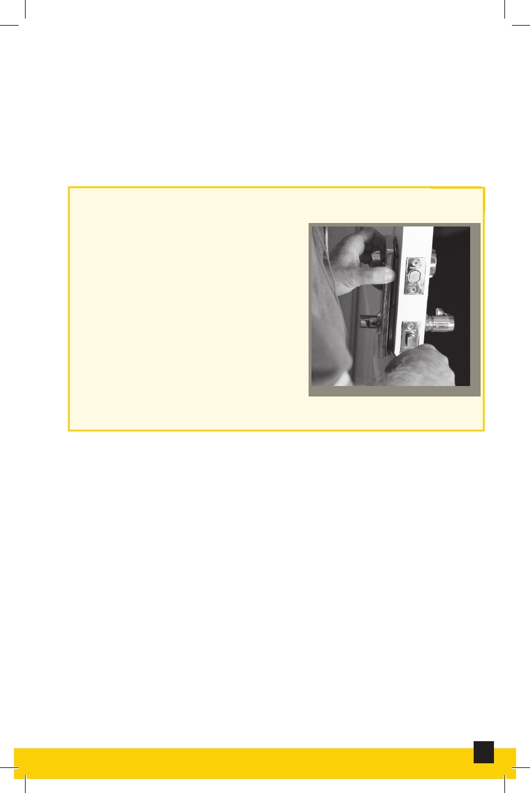

Plaster
A pasty composition (as of lime, water, and sand) that
hardens on drying and is used for coating walls, ceilings,
and partitions.
Re-Keying a Door Lock
Re-keying a lock involves
changing the pins inside the
lock so that the old key doesn’t
work and a new key will work.
Re-Keying a Door Lock
Second Inspection
Verifies that the apartment is ready for its new residents.
6
Interior and Exterior Maintenance and Repair